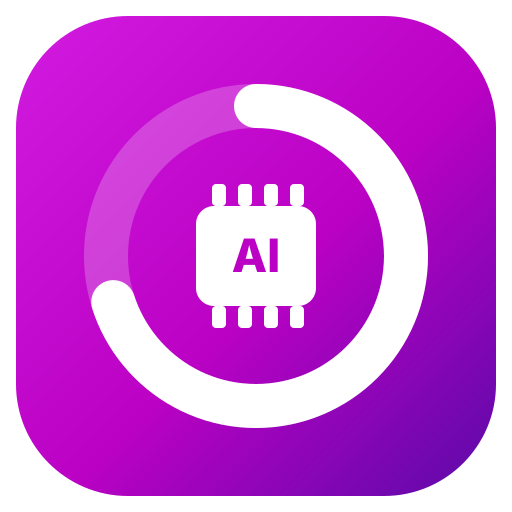
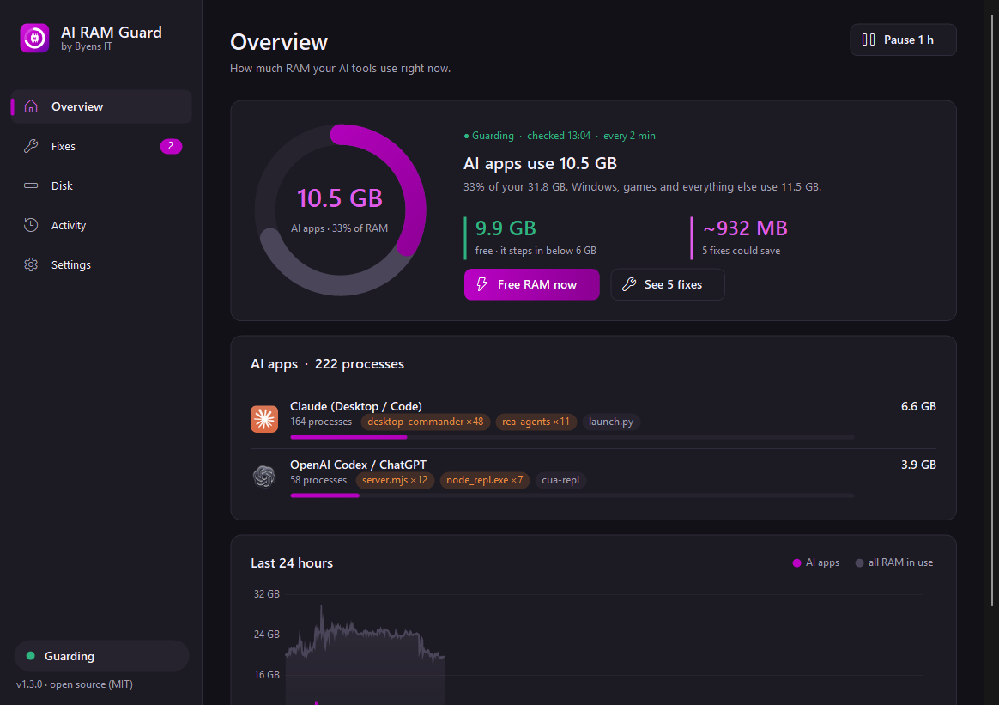

Windows
Windows 10 / 11 · 64-bit
Download til Windows- Åbn installationsfilen.
- Klik Installér. Appen åbner automatisk.
Ingen udpakning eller .NET-installation. Starter med Windows.

AI RAM Guardby Byens ITSe, hvad Claude, Codex og Cursor bruger, og ryd op i efterladte hjælpeprocesser.
Gratis · Open source · Ingen konto
Windows 10 / 11 · 64-bit
Download til WindowsIngen udpakning eller .NET-installation. Starter med Windows.
macOS 13+ · Apple Silicon og Intel
Download til MacEn native Mac-app med RAM-overblik og oprydning i efterladte hjælpere.
Betaen er ikke notariseret af Apple. Første åbning kræver din godkendelse i macOS.
Sådan godkender du Mac-betaen
Windows: Hvis SmartScreen viser en advarsel, kontrollér, at filen kommer fra dette GitHub-projekt. Vælg Flere oplysninger → Kør alligevel, hvis du vil fortsætte.
Mac-betaen er endnu ikke notariseret af Apple. Efter første åbningsforsøg skal du gå til Systemindstillinger → Anonymitet & sikkerhed → Åbn alligevel. Du skal kun godkende appen første gang.
Begge viser AI-programmernes RAM-forbrug og kan lukke efterladte hjælpere, som de tidligere har set en AI-app starte. Windows har også config-rettelser med fortryd, hukommelsestrim og cacheflytning. Mac-betaen har RAM- og diskoverblik. macOS understøtter ikke Windows' hukommelsestrim.
Installer den nye version ovenpå. Dine indstillinger og din historik bliver bevaret. Du kan fjerne programmet igen under Windows' Installerede apps eller ved at flytte Mac-appen til Papirkurv.